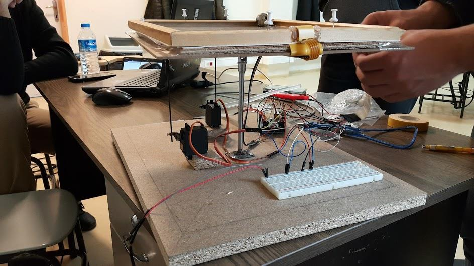
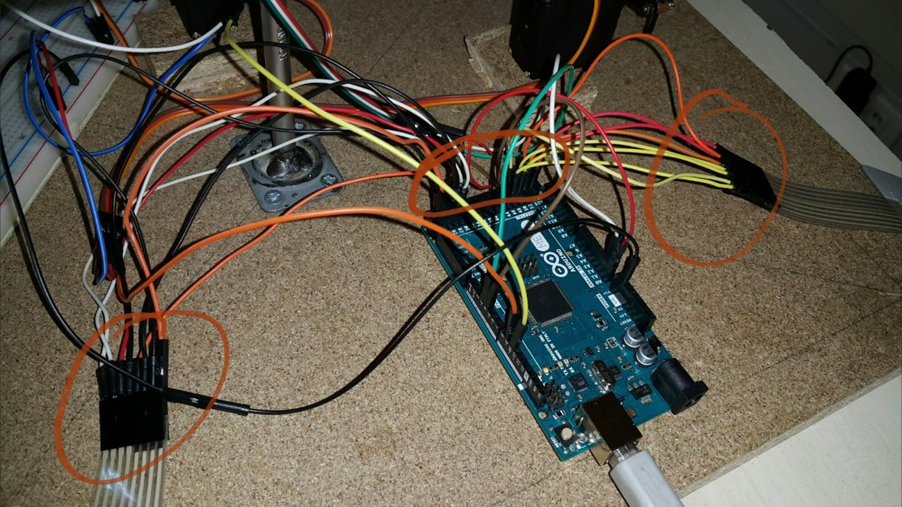

Proje Hakkında
 Projede zemini düz bir yüzey üzerinde topun dengede durmasını sağlayacak mekanik düzeneği ve bu hareketleri bilgisayar üzerinde 3 boyutlu gösterimi sağlanmaktadır. Tasarlanan düzenek topun konumun kontrol ederek bu konuma göre yapması gereken hareketleri yapmaktadır. Topun dengede durması için gerekli hesaplamalar topun anlık konumuna göre belirlenmiştir.
 Düzenekte düzlem olarak kullanılacak dokunmatik ekran üzerinden anlık konum bilgileri alınıp topun dengede durması için dokunmatik ekranın bağlı olduğu düzlem gerekli yönlere doğru hareket etmesini sağlanmaktadır. Servo motorlar düzlem hareketini sağlayacak Arduino ise motorlar için gerekli enerjiyi sağlayacaktır. Top, dokunmatik ekran üzerinde gerekli hareketleri yapıp düzlem üzerinden düşmemektedir. Bu hareketler eş zamanlı olarak Windows ve Linux platformlarında OpenSceneGraph kullanılarak hazırlanan üç boyutlu modelleme ile etkileşime sahiptir.
Dökümantasyon
Proje için sunulan rapora link üzerinden ulaşılabilir.Üyeler
- Ali Ozan TAÇALAN
- Emrullah GENÇOĞLU
- Ekber AZİZ
- Serap UÇUŞ
- Hasan BİLGİN
- Şahin EĞİLMEZ
- Oğuz Erdi ERKMEN